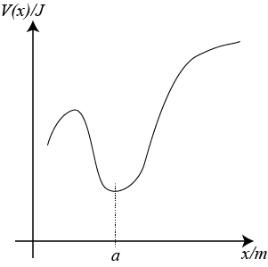
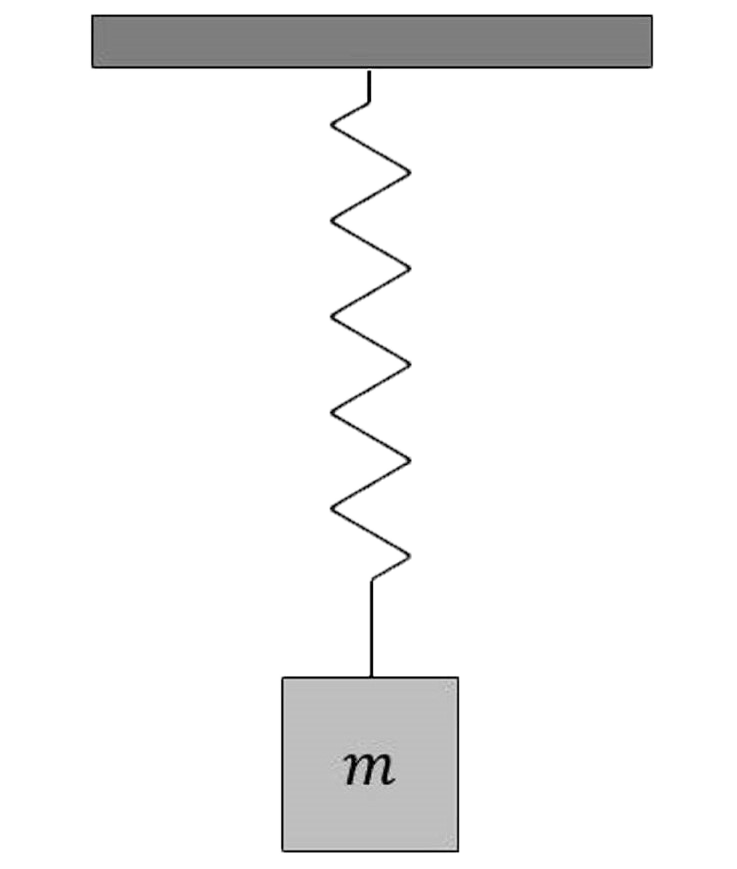
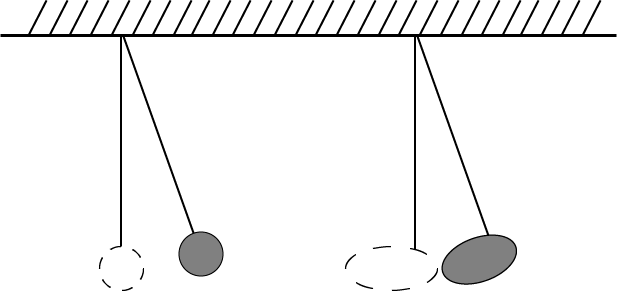
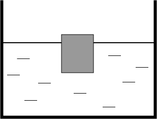
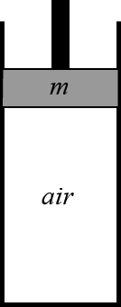

To view the demo, please visit the following links:
To download this note, you can print this web page as PDF. Layout should work correctly.
Simple Harmonic Motion is characterised by the following equation:
$$\frac{d^2x}{dt^2} = - \omega ^2 x$$There are some interesting properties of the above equation:
The full solution to this differential equation is:
$$x(t) = A \cos(\omega t + \beta)$$ $$x(t) = A \cos \omega t + B \sin \omega t$$where $A$, $B$ and $\beta$ are real constants.
Total energy of an oscillating system usually exists in two forms: potential energy, a function of position, and kinetic energy, a function of velocity. If we consider a mass-spring system, potential energy and kinetic energy can be expressed as the following:
$$V(x) = \frac{1}{2}kx^2 = \frac{1}{2}k A^2 \cos^2 \omega t$$ $$T(v) = \frac{1}{2}mv^2 = \frac{1}{2}m \omega ^2 A^2 \sin^2 \omega t$$Total energy of the system: $E(x,v) = kA^2$. Energy is conserved, as expected. And this total energy is equal to maximum kinetic energy and maximum potential energy.
NOTE: $m\omega^2 = k$
The oscillating system can be viewed as exchanging potential and kinetic energy periodically, via a force derived from a conservative field. In the case of mass-spring system, kinetic energy is from the moving mass (spring is considered massless, so it doesn't have kineic energy), potential energy is stored in the spring (elastic potential energy) and the force is the spring force.
Any system carrying out small oscillation around an equilibrium position is said to be in SHM. This can be shown by considering an arbitrary one dimensional potential, which is a function of position $V(x)$.
Suppose the function is convex at a particular poitn $x=a$. By evaluating the Taylor series of $V(x)$ at $x=a$ we obtain:
$$V(x) = V(a) + \frac{1}{1!} \frac{d}{dx} V(a) . (x-a) + \frac{1}{2!} \frac{d^2}{dx^2} V(a) . (x-a)^2 + ...$$When the oscillation about $x=a$ is small, higher order of $(x-a)^n$ is negligible. Also note that because $\frac{d}{dx}V(a) = 0$, we will have:
$$V(x) - V(a) = k(x-a)^2$$ $$F(x) = -\frac{dV}{dx} = -2k(x-a)$$ $$\frac{d^2x}{dt^2} = -\frac{2k}{m} (x-a)$$If we choose $(a,0)$ as the new origin, $(x-a)$ will become $x$ while the second time derivative of $x$ stays the same.
$$\frac{d^2x}{dt^2} = -\frac{2k}{m} x$$which is the equation of motion for SHM.
NOTE: see Taylor series for a more detailed explanation about the Taylor series.
A mass $m$ is attached to a massless spring with a spring constant $k$. The spring obeys Hooke's Law in both extension and contraction.
To view a demonstration for a simple pendulum system, please visit here.
A point mass $m$ is attached to one end of an massless, inelastic string (or a solid rod) of lenght $L$. The mass is displaced and released from rest from a certain height.
A cylinder of diamter $d$ floats with $l$ of its length submerged. The total height is $L$. The cylinder is pushed down by a distance of $A$ and released.
A vertical tube with a cross-sectional area of $A$ is filled with air of density $\rho$, under adiabatic condition (no heat transfer), is closed at one end and fitted with a freely-moving piston of mass $m$. The piston is pushed down and released.
NOTE: under adiabatic condition, the first law of thermodynamics shows that:
$$dU = -PdV$$ An LC circuit is composed of an ideal capacitor with capacitance $C$ and an ideal inductor with inductance $L$. The two components are connected to each other (shown below). The capacitor is initially charged to a voltage $V_0$. Find the current in the circuit as a function of time.
Real oscillating systems must dissipate energy and come to a stop. In many situations, the resistive force is proportional to the velocity of the oscillator. We will include a resistive term $F = -\gamma \frac{dx}{dt}$ in the equation of motion.
$$\frac{d^2x}{dt^2} = -\omega_0^2x - \gamma\frac{dx}{dt}$$where $\gamma$ is a positive, real constant. It determines the strength the resistive force. $\omega_0$ is the natural frequency, the angular frequency of free oscillation.
Let's again consider some of important features of this ODE:
Although the equation is in real domain ($x(t) \in \mathbb{R}$), it turns out that it's much easier to solve the ODE if we do it in complex domain $\mathbb{C}$.
This particular trick works because a complex function is a linear combination of a real part and an imaginary part. Since time is in the real domain ($t \in \mathbb{R}$), time derivative of a complex function will have a separate real and imaginary parts. To understand this idea, we can write a complex function of time as $z(t)=a(t)+b(t)i$. If we plug this into the above ODE:
$$\frac{d^2z}{dt^2} = -\omega_0^2z-\gamma\frac{dz}{dt}$$ $$\frac{d^2a}{dt^2} + \frac{d^2b}{dt^2}i = -\omega_0^2a -\omega_0^2bi - \gamma\frac{da}{dt} -\gamma\frac{db}{dt}i$$The above equation requires that the real parts equal to the real parts, and the imaginary parts equal to the imaginary parts. Note that the first and second time derivatives of $a(t)$ and $b(t)$ are real functions.
$$\frac{d^2a}{dt^2} = -\omega_0^2a-\gamma\frac{da}{dt}$$ $$\frac{d^2b}{dt^2} = -\omega_0^2b-\gamma\frac{db}{dt}$$This means that both $a(t)$ and $b(t)$ are real solutions to the original ODE i.e. $a(t)$ and $b(t)$ are what we obtain if we solve the ODE in the real domain. Thus, what we can do is that we can solve the damped oscillation ODE in the complex domain, and then obtain the real part of that complex solution to get our real solution.
There are many tricks to solve this ODE, especially in the complex domain. We can try using an exponential function because its derivative has a similar form to itself. So I will let $x(t) = Ae^{Bt}$, where $A$ and $B$ are complex constants. Its first and second time derivatives will be:
$$\frac{dx}{dt} = BAe^{Bt}$$ $$\frac{d^2x}{dt^2} = B^2Ae^{Bt}$$Let's substitute these back into our original ODE and rearrang it:
$$B^2Ae^{Bt} = -\omega_0^2Ae^{Bt} - \gamma \frac{dx}{dt} = BAe^{Bt}$$ $$B^2 = -\omega_0^2 - \gamma B$$ $$B^2 + \gamma B + \omega_0^2 = 0$$This is our familiar quadratic equation. Because $B$ is a complex number, we can always find the value of B from the above equation. Surprisingly, it also means that the value of $B$ depends entirely on characteristic of our damped oscillation system ($\omega_0$ and $\gamma$). Let's consider our discriminant $\Delta = \gamma^2 - 4\omega_0^2$
Our $B$ value is a real number! Our $A$ value will be one adjustable constant for our general solution.
$$x(t) = Ae^{-\frac{\gamma}{2}t}$$This is great! As $A$ is our adjustable constant, we can get a real solution by choosing a real value for $A$.
You might note that we still need one more adjustable constant to obtain the general solution. Thus, we need another solution to the ODE. This solution is not intuitive to guess, but it is $x(t) = Ate^{Bt}$. Its first and second time derivatives will be:
$$\frac{dx}{dt} = Ae^{Bt} + BAte^{Bt} = (1+Bt)Ae^{Bt}$$ $$\frac{d^2x}{dt^2} = BAe^{Bt} + (1+Bt)BAe^{Bt} = (2+Bt)BAe^{Bt}$$Substituting these back into our ODE:
$$(2+Bt)BAe^{Bt} = -\omega_0^2 Ate^{Bt} - \gamma (1+Bt)Ae^{Bt}$$ $$(2+Bt)B = -\omega_0^2 t - \gamma (1+Bt)$$ $$2B+B^2t = -\omega_0^2 t - \gamma - \gamma B t$$ $$(B^2 + \gamma B + \omega_0^2)t + (2B + \gamma) = 0$$This looks interesting! There is a small observation we can make about this. The left-hand side of the above equation can be thought as a function of time. This function is always equal to zero, which means that all of its coefficients are zero.
$$B^2 + \gamma B + \omega_0^2 = 0$$ $$2B + \gamma = 0$$What a coincidence! This will give us the exact value of $B$ as the above case: $B = -\gamma/2$. Thus our second solution will $x(t) = Ate^{-\frac{\gamma}{2}t}$.
The general solution will be the linear combination of two solutions above:
$$x(t) = (A_1+A_2t)e^{-\frac{\gamma}{2}t}$$This situation is also known as Critical damping. The system decays exponentially without oscillation. The amount of damping is just right to stop oscillation.
Great! We have two values of $B$, which correspond to two solutions:
$$x(t) = Ae^{(-\gamma/2 + \sqrt{\gamma^2/4-\omega_0^2})t}$$ $$x(t) = Ae^{(-\gamma/2 - \sqrt{\gamma^2/4-\omega_0^2})t}$$The general solution will be the linear combination of the above two solutions:
$$x(t) = e^{-\frac{\gamma}{2} t} \bigg(A_1e^{\sqrt{\gamma^2/4-\omega_0^2}t}+A_2e^{-\sqrt{\gamma^2/4-\omega_0^2}t}\bigg)$$Again, we can choose the values of $A_1$ and $A_2$ to be real to obtain the real solution.
This situation is known as overdamping. The system decays slowlier than exponentially. The amount of damping is so great that it takes longer for the system to return to the equilibrium position.
Again, each value of $B$ corresponds to one solution:
$$x(t) = Ae^{(-\gamma/2 + i\sqrt{\omega_0^2-\gamma^2/4})t}$$ $$x(t) = Ae^{(-\gamma/2 - i\sqrt{\omega_0^2-\gamma^2/4})t}$$However, it must be noted that our values of $B$ are complex numbers, and unfortunately, we cannot ignore this fact. We have to take the real part of the above solutions. Luckily, the Euler identity allows us to write the above solutions in a clearer form, to see the real and imaginary parts.
$$x(t) = Ae^{-\frac{\gamma}{2} t} \Bigg[\cos\bigg(\sqrt{\omega_0^2-\frac{\gamma^2}{4}}t\bigg) + i\sin\bigg(\sqrt{\omega_0^2-\frac{\gamma^2}{4}}t\bigg)\Bigg]$$ $$x(t) = Ae^{-\frac{\gamma}{2} t} \Bigg[\cos\bigg(\sqrt{\omega_0^2-\frac{\gamma^2}{4}}t\bigg) - i\sin\bigg(\sqrt{\omega_0^2-\frac{\gamma^2}{4}}t\bigg)\Bigg]$$The real part of the solution above will give us a real solution. Howver, both above solutions have the same real part, thus we will not get two distinct solutions by taking the real part of the two solutions. This is indeed very unfortunate. But interestingly, the imaginary part of the complex solution is also a real solution.
Taking the imaginary part alone (without the imaginary unit $i$) will give us another real solution. Therefore, our two real distinct solutions are:
$$x(t) = Ae^{-\frac{\gamma}{2} t} \cos\bigg(\sqrt{\omega_0^2-\frac{\gamma^2}{4}}t\bigg)$$ $$x(t) = Ae^{-\frac{\gamma}{2} t} \sin\bigg(\sqrt{\omega_0^2-\frac{\gamma^2}{4}}t\bigg)$$The general solution will be a linear combination of the above solutions:
$$x(t) = e^{-\frac{\gamma}{2} t} \Bigg[A_1 \cos\bigg(\sqrt{\omega_0^2-\frac{\gamma^2}{4}}t\bigg) + A_2 \sin\bigg(\sqrt{\omega_0^2-\frac{\gamma^2}{4}}t\bigg)\Bigg]$$The general solution shows that this is an oscillating system from the term $\cos$ and $\sin$. Thus, the quantity $\sqrt{\omega_0^2-\frac{\gamma^2}{4}}$ is the angular frequency of oscillation. With this information, we can then set $\omega = \sqrt{\omega_0^2-\frac{\gamma^2}{4}}$ and simplify our general solution:
$$x(t) = e^{-\frac{\gamma}{2} t} \bigg(A_1 \cos \omega t + A_2 \sin \omega t \bigg)$$We can make an interesting observation here. Using the Cauchy–Schwarz inequality, we get this:
$$A_1 \cos \omega t + A_2 \sin \omega t \leq \sqrt{A_1^2+A_2^2} \sqrt{\cos^2 \omega t + \sin^2 \omega t} = \sqrt{A_1^2+A_2^2}$$Note that $\cos^2{\theta} + \sin^2{\theta} = 1$ for any real values of $\theta$. Thus:
$$x(t) \leq \sqrt{A_1^2+A_2^2} e^{-\frac{\gamma}{2}}$$The above inequality means that our general solution is always smaller than an exponential function. This exponential function $\sqrt{A_1^2+A_2^2} e^{-\frac{\gamma}{2}}$ is known as the envelope of our solution: the system will oscillate within this exponential decay envelope.
This is the most interesting situation, also known as underdamping. The amplitude of oscillation decays exponentially with time until there is no more oscillation. The system oscillates at an angular frequency slightly below its natural frequency. The amount of damping is small, dissipating the energy of oscillation.
Note that our general solution can be written in a more compact form:
$$x(t) = Ae^{-\frac{\gamma}{2} t}\cos (\omega t+\phi)$$At this point, it's best to visit the Harmonic Oscillator solution graph to understand the behavior of the system when the value of $\gamma$ changes. Keep in mind that you should set the value of $F_0$ to zero.
All of the situations above do not involve an external driving force. Suppose we want to use a force to drive the oscillator. There are many forms that our driving force can take, but for simplicity, we will take the driving force to be of the form $F(t)=F_0 \cos \omega_d t$, where $\omega_d$ is the angular frequency of the driving force. This force is an oscillating force, a worthy assumption for our oscillating system. The ODE then becomes:
$$\frac{d^2x}{dt^2}=-\omega_0^2x+\frac{F_0}{m}\cos \omega_d t$$Let's make some observations about this ODE:
This fact will be an obstacle for us, but there is a little trick to circumvent this. I will discuss it later.
Although this ODE is in the real domain, again, it's much easier to analyse and solve it in the complex domain. Remember, our real solution is the real part of our complex solution. Thus, instead of considering our driving force as $F(t) = F_0 \cos \omega_d t$, we will consider our driving force as a complex exponential function of time $F(t) = F_0 e^{i\omega_d t}$. We can do this thanks to the Euler identity. Our ODE in the complex domain will be:
$$\frac{d^2x}{dt^2}=-\omega_0^2x+\frac{F_0}{m}e^{i\omega_d t}$$We will guess our solution to be an exponential function again. However, as you might have observed, we have the driving force term, which has its own exponential term. Thus, we can try an exponential function with the same power as the driving force term as our solution. In the Physics sense, we can understand that our oscillating system follows the angular frequency of the driving force.
$$x=Ae^{i \omega_d t}$$ $$\frac{dx}{dt}=i\omega_dAe^{i \omega_d t}$$ $$\frac{d^2x}{dt^2}=-\omega_d^2Ae^{i \omega_d t}$$Substituting these into our ODE:
$$-\omega_d^2Ae^{i \omega_d t}=-\omega_0^2Ae^{i \omega_d t}+\frac{F_0}{m}e^{i\omega_d t}$$ $$-\omega_d^2A=-\omega_0^2A+\frac{F_0}{m}$$ $$(\omega_0^2-\omega_d^2)A=\frac{F_0}{m}$$ $$A = \frac{F_0/m}{\omega_0^2-\omega_d^2}$$This is indeed very strange! Remember from the above situations, the $A$ value will be one of our adjustable constants. But in this case, we get an exact and real value of $A$! Although we are happy that the complex solution $x(t)=Ae^{i\omega_d t}$ works, this is a fixed solution: we cannot modify this solution to fit to our initial conditions.
At least we know that the corresponding real solution will simply be:
$$x(t) = A\cos \omega_d t$$where $A = \frac{F_0/m}{\omega_0^2-\omega_d^2}$.
This particular solution has a special name: the steady-state solution. This solution is the dominant behavior of the oscillating system after a long period time, when the initial conditions no longer matter much. To fully understand this concept, please continue reading.
We will use a clever trick here. Note that our ODE has an extra driving force term. This term prevents us from adding two solutions together to obtain another solution. However, if we add a solution of free oscillation ODE to a solution of driven oscillation ODE, the newly obtained solution will not affect the driving force term. To see this more clearly, consider $x_1(t)$ as a solution to free oscillation ODE and $x_2(t)$ as a solution to driven oscillation ODE:
$$\frac{d^2x_1}{dt^2} = -\omega_0^2 x_1$$ $$\frac{d^2x_2}{dt^2} = -\omega_0^2 x_2 + \frac{F_0}{m}\cos \omega_d t$$ $$\frac{d^2(x_1+x_2)}{dt^2} = -\omega_0^2 (x_1+x_2) + \frac{F_0}{m}\cos \omega_d t$$Wow! $x_1(t)+x_2(t)$ is a solution to the driven oscillation ODE! Recall the solution to the free oscillation ODE is $x_1(t)=A\cos(\omega t+\phi)$, our general solution to the driven oscillation ODE is:
$$x(t) = A\cos(\omega t+\phi) + \frac{F_0/m}{\omega_0^2-\omega_d^2}\cos \omega_d t$$where $A$ and $\phi$ are our two adjustable constants.
However there is a problem to this solution. This is a sum of two cosine terms with different angular frequencies, which will produce a beat pattern. Visit Harmonic Oscillator solution graph and set $\gamma$ to zero to observe this phenomenon.
Taking a closer look at our steady state solution:
$$x(t) = \frac{F_0/m}{\omega_0^2-\omega_d^2}\cos \omega_d t$$The amplitude of this oscillation depends on the magnitude of the driving force $F_0$, the angular frequency of the driving force $\omega_d$ and the natural frequency of the oscillating system $\omega_0$.